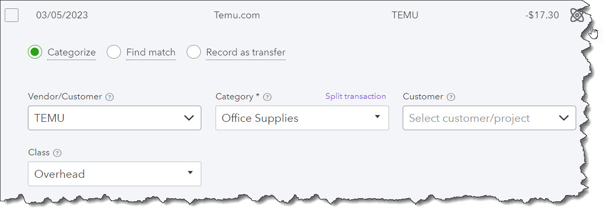
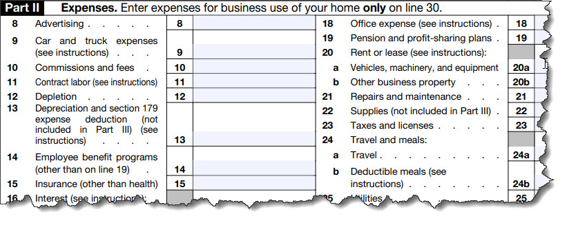

And what do you do with all of the supporting documentation? Do you have to keep that, too?
They’re common questions. How long do Form 1040 filers (both individuals and small businesses) have to hang on to those 1040s and Schedule As and Schedule Cs? What about 1099s and W-2s? And do you also have to keep supporting documentation, like business receipts and property tax statements?
The short answer to the first question is three years from the date you filed your tax return or two years from the date the tax was paid, whichever is later. This represents the IRS’ period of limitations, the block of time during which the IRS can assess additional tax or you can amend a return to claim a refund or credit.
And yes: You also need to store your copies of tax forms like W-2s and 1099s, as well as any documents that support the information you supplied on your tax return, including:
Yes, you need to keep all official IRS forms for three years.
Other Situations
Like any other IRS rules or regulations, though, there are exceptions to the three-year rule. Here’s a look at them.
Six Years.
Did you fail to report any income that you should have reported? If so, was it more than 25% of the gross income displayed on your return? Or can it be attributed to foreign financial assets that represent more than $5,000? The IRS can assess taxes up to six years after you filed your return.
Seven Years.
If you claim a loss from bad debt deduction or worthless securities, keep your return and documentation for seven years.
No Limit.
If you didn’t file a return or you filed a fraudulent one, there’s no period of limitations.
Once the period of limitations is up, you may still want to retain your records in case, for example, your insurance companies or creditors will want access to them, the IRS advises.
What About Refunds or Credits You Should Have Received?
You can claim a credit or refund up to:
The latest of these dates is the deadline the IRS uses. It’s best to catch errors and omissions as soon as possible so you can get the process rolling.
How Should You Store Records of Income and Expenses?
You can do it the old-fashioned way, by keeping paper receipts and other documentation supporting you income and expenses in file folders or large envelopes in a safe place. If you’re using a financial application like Mint (personal finance) or QuickBooks Online (small business accounting) or Wave (both), the IRS may ask permission to access your files.
Financial applications like QuickBooks Online allow you to import, categorize, and store tax-related income and expenses.
If nothing else, you can print your records if they’re needed so you don’t have to store all of that paper. This is another good reason to always have a current backup of your online financial files.
If you’re not using a personal finance or small business web-based solution, you should consider it, especially if you have business income and expenses to track for your income taxes. Some, like Mint (Intuit) and Wave (H&R Block), are free. They’re easy to set up and use. You provide your usernames and passwords for your online bank accounts, and they import your transactions. You can assign categories to them so you know where they’ll go on your Schedule C. Reports help you group transactions that share categories.
If you categorize your financial transactions, it will be much easier to assign them on your Schedule C.
We’re Here to Help
Do you have questions about what to do if you discover you should have gotten a refund or credit – after you’ve filed your taxes? Wondering if you should still file for a year when you didn’t? Haven’t finished your 2022 taxes yet? Give us a call or drop us an email. We can schedule some time to get it all sorted out.